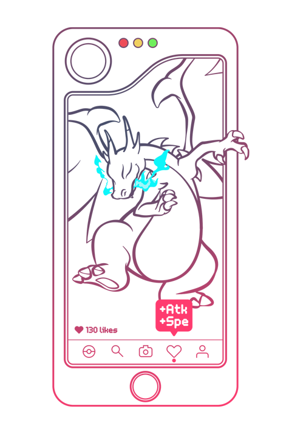

Competitive Pokemon, at its core, has a very simple objective: Get the opposing team's health down to zero! But how does one get there? When do I decide to use my setup move? How do I know when to sacrifice a teammate? All these questions and more are common inquiries that players make, and it all boils down to one thing:
A common mistake people make is playing purely to instinct and relying too hard on prediction, looking no further ahead than 1-2 turns at a time. This creates a very inconsistent battle style that will often lose games to smart players that boil games down to winning regardless of prediction. Formulating a gameplan is essential to being a great player, and it starts as early as the team preview. To figure out a gameplan, identify the following:
Looking at your own team, identify what Pokemon on your team requires the least work to enable a sweep. For example, your Keldeo beats everything except their opposing Jellicent, which endlessly walls your Keldeo. Identifying a way to remove the opposing Jellicent, like using a Pursuit trapper on your team, and then figuring out how to get Keldeo safely onto the field repeatedly is an example of creating an offensive gameplan.
Defensive gameplans can be developed as well. However, a common misconception about defensive playstyles is that they win by doing absolutely nothing. This is extremely ill-advised, as competent players will capitalize on their opponent's wasted time and put them in a horrible situation. Defensive teams aim to win by actively removing their foe's ability to break through specific teammates. Whether this is through outright fainting them with attacks or severely limiting their survival with status and hazards, defensive teams still need to clearly identify the easiest way to win and what means to get there.
In short, finding the path of least resistance to winning and identifying how you can get there is the essence of developing a gameplan.
It is important to identify how to win as well as how to not lose. Try to take a look from your opponent's perspective, and see what their path of least resistance to beating you would be. Perhaps your only check to Heatran is Rotom-Wash, so you should aim to keep it unhurt as much as you can and switch it less liberally into other opposing threats. On the flipside, your choice specs Tapu Lele might be your only means of breaking the opponent's Mega Sableye stall team. Therefore, you should avoid switching it in carelessly into attacks, status moves, and hazard damage unless absolutely necessary.